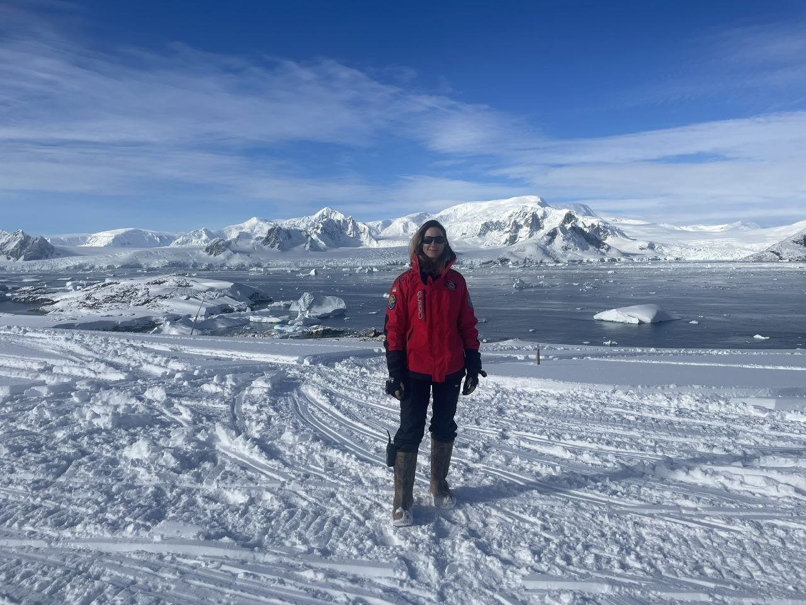
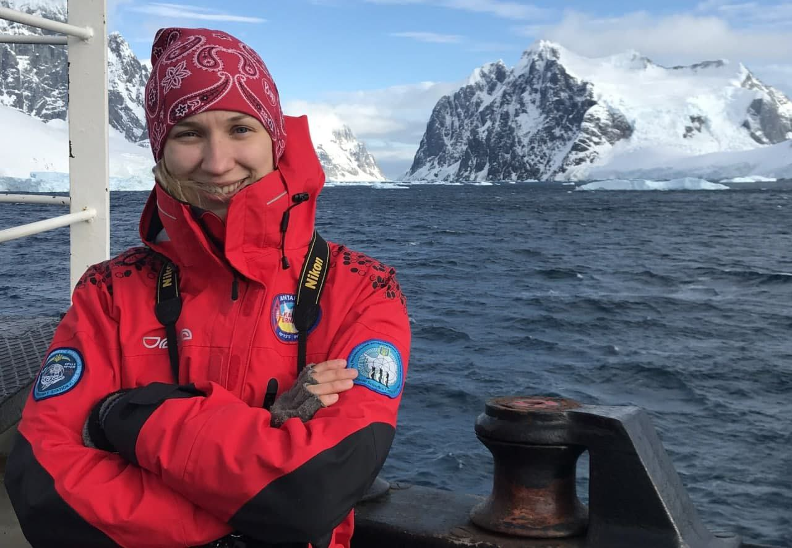

Українська науковиця, метеорологиня, основний напрям дослідження полярні хмари та опади. Доктор філософії в галузі «Науки про Землю», тема дисертації «Хмари та опади в районі Антарктичного Півострова: мікрофізика, мезомасштабні процеси, кліматичні проєкції до кінця ххі ст.»


Учасниця сезонного загону Українських Антарктичних Експедицій у 2021, 2022, 2024 i 2025pp. Працює в Українському Гідрометеорологічному Інституті ДСНС та НАН України та Національному Антарктичному Науковому Центрі України. Викладач в КНУ ім. Т. Шевченка (предмети термодинаміка атмосфери та методи аналізу метео процесів і полів) Наукові дослідження виконуються частково в межах міжнародних проєктів Oceanice та PolarRES